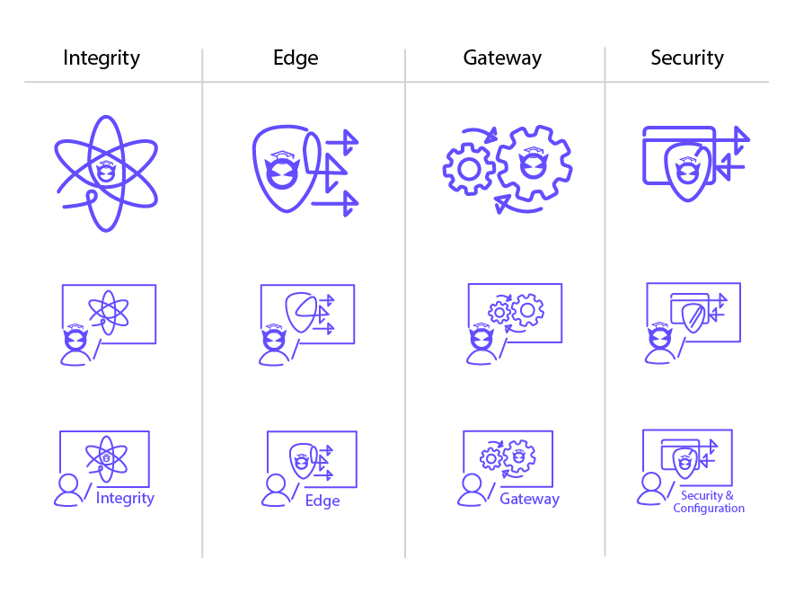

During my time at BlueCat, I had worked on the Learning Team's Shopify page. This is a site where they sell their training courses. I had also enjoyed playing the role of a graphic designer and had made icons and images for the website.
For information, about the Shopify project visit here.
Course Photos
I had created photos for the courses in Adobe Photoshop. There are 2 eLearning options and 4 instructor-led courses. For each photo, I had altered the desktop screen, person, and text bar.
Design Considerations
Represent the type of course - Instructor-Led vs E-learning
Consistency between all images
Represent the material being taught
Ensure cultural diversity
Icons
It was debated whether icons or photos should be used for the courses. In Adobe Illustrator, I had made some icons for the instructor-led courses to explore different options. In the end, we decided to use the photos to match closely with BlueCat's brand.

Badges
I had also made badges to represent the different levels of certifications for the courses. The integrity product had 4 levels of certifications, while Edge and Gateway had 1 level.